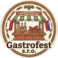
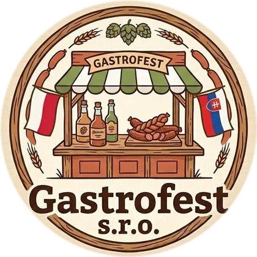
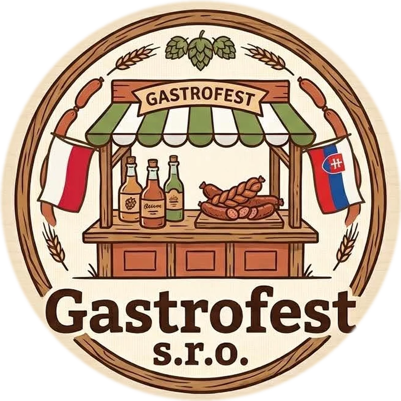

<meta charset="utf-8">
<meta name="viewport" content="width=device-width, initial-scale=1">
<meta name="robots" content="noindex, follow">
<title>GastroFest</title>
<link rel="stylesheet" href="assets/css/style.css">

<nav class="nav" id="nav">
  <div class="nav-inner">
    <a class="brand" href="#top">
      
      Gastro<em>Fest</em>
    </a>
    <button class="nav-toggle" id="navToggle" aria-label="Otvoriť menu" aria-expanded="false" aria-controls="navLinks">
      <span class="bar"></span><span class="bar"></span><span class="bar"></span>
    </button>
    <ul class="nav-links" id="navLinks">
      <li><a href="#o-nas">O nás</a></li>
      <li><a href="#ponuka">Ponuka</a></li>
      <li><a href="#mapa">Kde nás nájdete</a></li>
      <li><a href="#kontakt">Kontakt</a></li>
      <li class="nav-staff"><a href="https://naklady-dashboard.vercel.app/login">Prihlásenie personálu</a></li>
    </ul>
  </div>
  <div class="nav-progress"><i id="navProgressBar"></i></div>
</nav>

<main id="top">
  <section class="hero">
    
    <div class="steam" aria-hidden="true">
      <div class="wisp w1"></div>
      <div class="wisp w2"></div>
      <div class="wisp w3"></div>
      <div class="wisp w4"></div>
    </div>
    <canvas class="snow" id="snowCanvas" aria-hidden="true"></canvas>
    <div class="wrap hero-inner">
      <div class="hero-logo-wrap">
        
      </div>
      <p class="eyebrow">Varené víno &amp; horúce nápoje na jarmokoch</p>
      <h1>GastroFest</h1>
      <p class="tagline">Korenené víno rôznych chutí, punč a horúce nápoje z kotlíka — tam, kde sa ľudia stretávajú na jarmokoch a festivaloch po celom Slovensku.</p>
      <div class="hero-ctas">
        <a class="btn btn-primary" href="#ponuka">Pozrieť ponuku</a>
        <a class="btn btn-ghost" href="#mapa">Kde nás nájdete</a>
      </div>
    </div>
  </section>

  <svg class="lights" viewBox="0 0 1140 34" preserveAspectRatio="none" aria-hidden="true">
    <path d="M0 4 Q 95 30 190 4 T 380 4 T 570 4 T 760 4 T 950 4 T 1140 4" fill="none" stroke="currentColor" stroke-width="1.5"/>
    <g>
      <!-- bulbs generated below -->
    </g>
  </svg>

  <section id="o-nas">
    <div class="wrap story">
      <div class="story-figure reveal">
        <svg viewBox="0 0 300 375" aria-hidden="true">
          <defs>
            <radialGradient id="mugGlow" cx="50%" cy="30%" r="70%">
              <stop offset="0%" stop-color="#ffe3b0" stop-opacity="0.55"/>
              <stop offset="100%" stop-color="#ffe3b0" stop-opacity="0"/>
            </radialGradient>
            <linearGradient id="potGrad" x1="0" y1="0" x2="0" y2="1">
              <stop offset="0%" stop-color="#d97a4a"/>
              <stop offset="100%" stop-color="#8a4322"/>
            </linearGradient>
          </defs>
          <rect width="300" height="375" fill="url(#mugGlow)"/>

          <g stroke="#fff6ee" stroke-width="3.2" fill="none" stroke-linecap="round" opacity="0.55">
            <path d="M120 150 C 110 130 130 115 122 96 C 114 78 132 66 126 50"/>
            <path d="M150 148 C 158 128 140 112 150 92 C 160 74 144 60 152 44"/>
            <path d="M180 150 C 190 132 172 116 182 98 C 190 82 176 68 184 54"/>
          </g>

          <g stroke="#2a1508" stroke-width="7" stroke-linecap="round">
            <path d="M112 258 L76 322"/>
            <path d="M188 258 L224 322"/>
            <path d="M150 262 L150 328"/>
          </g>

          <g fill="#d9713f" stroke="#2a1508" stroke-width="3" stroke-linejoin="round">
            <path d="M122 335 C 112 320 116 305 122 296 C 128 305 132 320 122 335 Z"/>
            <path d="M150 338 C 138 320 143 300 150 288 C 157 300 162 320 150 338 Z"/>
            <path d="M178 335 C 168 320 172 305 178 296 C 184 305 188 320 178 335 Z"/>
          </g>

          <g>
            <ellipse cx="150" cy="181" rx="58" ry="12" fill="#6b1a2c" opacity="0.9"/>
            <path d="M88 190 C 88 240 108 268 150 268 C 192 268 212 240 212 190 C 212 176 196 166 150 166 C 104 166 88 176 88 190 Z"
                  fill="url(#potGrad)" stroke="#2a1508" stroke-width="5" stroke-linejoin="round"/>
            <ellipse cx="150" cy="176" rx="58" ry="13" fill="none" stroke="#2a1508" stroke-width="4"/>
            <path d="M96 172 Q150 130 204 172" fill="none" stroke="#2a1508" stroke-width="6" stroke-linecap="round"/>
          </g>

          <g stroke="#2a1508" stroke-width="4.5" stroke-linecap="round" fill="none">
            <path d="M214 202 L244 172"/>
            <circle cx="211" cy="206" r="12" fill="#c0603c" stroke="#2a1508" stroke-width="4"/>
          </g>
        </svg>
        <span class="cap">Adam Kazsuba — majiteľ a vedúci</span>
      </div>
      <div class="reveal" style="--i:1">
        <div class="eyebrow-row"><span class="sprig" aria-hidden="true"><svg viewBox="0 0 24 40" fill="none" stroke="currentColor" stroke-width="1.6" stroke-linecap="round"><path d="M12 38V6"/><ellipse cx="8" cy="10" rx="3" ry="5" transform="rotate(-25 8 10)"/><ellipse cx="16" cy="14" rx="3" ry="5" transform="rotate(25 16 14)"/><ellipse cx="8" cy="20" rx="3" ry="5" transform="rotate(-25 8 20)"/><ellipse cx="16" cy="24" rx="3" ry="5" transform="rotate(25 16 24)"/><path d="M12 6 6 2M12 6 18 2"/></svg></span><p class="eyebrow">O nás</p></div>
        <h2>Za kotlíkom stojí meno, nie len firma</h2>
        <p>Gastrofest varí a nalieva korenené víno a horúce nápoje priamo na mieste — kotlík za kotlíkom, jarmok za jarmokom, po celom Slovensku. Vôňa škorice, klinčekov a pomarančovej kôry patrí k zime rovnako ako svetielka nad stánkami.</p>
        <p>Za receptúrami aj stánkom stojí <strong>Adam Kazsuba</strong>, ktorý ako zodpovedný vedúci a majiteľ dohliada na to, aby bol každý pohár rovnako voňavý a teplý — nech je vonku akokoľvek chladno.</p>
        <p class="signature">„Dobré varené víno sa nedá uponáhľať — a jarmok bez neho nie je jarmok.“</p>
      </div>
    </div>
  </section>

  <section id="ponuka">
    <div class="wrap">
      <div class="section-head reveal">
        <div class="eyebrow-row"><span class="sprig" aria-hidden="true" style="color:var(--glow);"><svg viewBox="0 0 24 40" fill="none" stroke="currentColor" stroke-width="1.6" stroke-linecap="round"><path d="M12 38V6"/><ellipse cx="8" cy="10" rx="3" ry="5" transform="rotate(-25 8 10)"/><ellipse cx="16" cy="14" rx="3" ry="5" transform="rotate(25 16 14)"/><ellipse cx="8" cy="20" rx="3" ry="5" transform="rotate(-25 8 20)"/><ellipse cx="16" cy="24" rx="3" ry="5" transform="rotate(25 16 24)"/><path d="M12 6 6 2M12 6 18 2"/></svg></span><p class="eyebrow">Ponuka</p></div>
        <h2>Chute, ktoré zohrejú</h2>
      </div>
      <div class="stall-frame">
        <div class="stall-roof-wrap" aria-hidden="true">
        <svg>
          <defs>
            <pattern id="roofStripes" width="42" height="36" patternUnits="userSpaceOnUse">
              <rect width="21" height="36" fill="var(--glow)"/>
              <rect x="21" width="21" height="36" fill="var(--surface-2)"/>
            </pattern>
            <pattern id="roofScallopMask" width="42" height="36" patternUnits="userSpaceOnUse">
              <rect width="42" height="36" fill="white"/>
              <circle cx="10.5" cy="36" r="10.5" fill="black"/>
              <circle cx="31.5" cy="36" r="10.5" fill="black"/>
            </pattern>
            <mask id="roofScallop">
              <rect width="100%" height="100%" fill="url(#roofScallopMask)"/>
            </mask>
          </defs>
          <rect width="100%" height="100%" rx="10" fill="url(#roofStripes)" mask="url(#roofScallop)"/>
        </svg>
        </div>
        <div class="stall-banner">Gastrofest</div>
        <div class="menu-board ornate">
        <div class="wood-overlay" aria-hidden="true"></div>
        <div class="table-bar" aria-hidden="true"></div>
        <div class="menu-grid">
          <div class="menu-item reveal" style="--i:0">
            <div class="menu-icon" aria-hidden="true"><svg viewBox="0 0 32 32" fill="none" stroke="currentColor" stroke-width="1.8" stroke-linecap="round" stroke-linejoin="round"><path d="M11 24C7 20 7 13 12 9c4-3 9-2 10 2 1 3-1 6-4 6-2 0-3-2-2-4"/><circle cx="22" cy="9" r="1.6" fill="currentColor" stroke="none"/></svg></div>
            <span class="tag">Klasika</span>
            <h3>Klasické korenené</h3>
            <p>Červené víno, škorica, klinčeky, pomaranč a badián — recept, ktorý sa nikdy neomrzí.</p>
          </div>
          <div class="menu-item reveal" style="--i:1">
            <div class="menu-icon" aria-hidden="true"><svg viewBox="0 0 32 32" fill="none" stroke="currentColor" stroke-width="1.8" stroke-linecap="round" stroke-linejoin="round"><path d="M16 12c-4-4-10-2-10 4 0 6 5 11 10 11s10-5 10-11c0-6-6-8-10-4Z"/><path d="M16 12V7"/><path d="M16 7c2-2 4-2 5-1"/></svg></div>
            <span class="tag">Ovocné</span>
            <h3>Jablko &amp; škorica</h3>
            <p>Biele víno s jablkovou šťavou a škoricou, jemnejšie a sviežejšie na chuť.</p>
          </div>
          <div class="menu-item reveal" style="--i:2">
            <div class="menu-icon" aria-hidden="true"><svg viewBox="0 0 32 32" fill="none" stroke="currentColor" stroke-width="1.8" stroke-linecap="round" stroke-linejoin="round"><path d="M16 6c4 6 7 10 7 14a7 7 0 1 1-14 0c0-4 3-8 7-14Z"/><path d="M12 20c0 2 1.5 3 3 3"/></svg></div>
            <span class="tag">Zimná špecialita</span>
            <h3>Med &amp; zázvor</h3>
            <p>Hrejivá kombinácia medu a čerstvého zázvoru pre chladné večery.</p>
          </div>
          <div class="menu-item reveal" style="--i:3">
            <div class="menu-icon" aria-hidden="true"><svg viewBox="0 0 32 32" fill="none" stroke="currentColor" stroke-width="1.8" stroke-linecap="round" stroke-linejoin="round"><circle cx="12" cy="18" r="4"/><circle cx="19" cy="15" r="4"/><circle cx="17" cy="22" r="4"/><path d="M17 11c1-2 3-2 4-4"/></svg></div>
            <span class="tag">Ovocné</span>
            <h3>Brusnicový punč</h3>
            <p>Sviežo kyslá brusnicová chuť s teplým korením.</p>
          </div>
          <div class="menu-item reveal" style="--i:4">
            <div class="menu-icon" aria-hidden="true"><svg viewBox="0 0 32 32" fill="none" stroke="currentColor" stroke-width="1.6" stroke-linecap="round" stroke-linejoin="round"><path d="M16 5v22M6.5 10.75l19 10.5M25.5 10.75l-19 10.5"/><path d="M16 5l-2.4 3M16 5l2.4 3M16 27l-2.4-3M16 27l2.4-3"/></svg></div>
            <span class="tag">Nealko</span>
            <h3>Detský punč</h3>
            <p>Ovocný, nealkoholický a teplý — aj pre najmenších návštevníkov jarmoku.</p>
          </div>
          <div class="menu-item reveal" style="--i:5">
            <div class="menu-icon" aria-hidden="true"><svg viewBox="0 0 32 32" fill="none" stroke="currentColor" stroke-width="1.8" stroke-linecap="round" stroke-linejoin="round"><path d="M8 12h13v8a6 6 0 0 1-6 6h-1a6 6 0 0 1-6-6v-8Z"/><path d="M21 14h2.5a3 3 0 0 1 0 6H21"/><path d="M12 9c0-1.5 1-1.5 1-3M16 9c0-1.5 1-1.5 1-3"/></svg></div>
            <span class="tag">Horúce nápoje</span>
            <h3>Čokoláda &amp; iné</h3>
            <p>Horúca čokoláda a ďalšie hrejivé nápoje podľa aktuálnej ponuky na mieste.</p>
          </div>
        </div>
        <p class="menu-note">Presná ponuka sa môže mierne líšiť podľa jarmoku a sezóny.</p>
        </div>
        <div class="crate-panels" aria-hidden="true"><div></div><div></div><div></div></div>
      </div>
    </div>
  </section>

  <section id="mapa">
    <div class="wrap map-section">
      <div class="map-card reveal ornate">
        <div class="wood-overlay" aria-hidden="true"></div>
        <svg viewBox="0 0 1000 480" role="img" aria-labelledby="mapTitle">
          <title id="mapTitle">Mapa Slovenska so stánkami Gastrofest</title>
          <defs>
            <linearGradient id="mapFill" x1="0.15" y1="0" x2="0.55" y2="1">
              <stop offset="0%" stop-color="color-mix(in srgb, var(--glow) 60%, var(--surface-2))"/>
              <stop offset="55%" stop-color="var(--surface-2)"/>
              <stop offset="100%" stop-color="color-mix(in srgb, var(--accent) 55%, var(--surface-2))"/>
            </linearGradient>
            <linearGradient id="routeGrad" x1="0%" y1="100%" x2="100%" y2="0%">
              <stop offset="0%" stop-color="var(--accent)"/>
              <stop offset="100%" stop-color="var(--glow)"/>
            </linearGradient>
            <filter id="tatrasBlur" x="-60%" y="-60%" width="220%" height="220%">
              <feGaussianBlur stdDeviation="14"/>
            </filter>
          </defs>

          <g class="graticule" stroke="var(--line)" stroke-width="1" stroke-dasharray="1 6" opacity="0.6">
            <line x1="125" y1="0" x2="125" y2="480"/>
            <line x1="375" y1="0" x2="375" y2="480"/>
            <line x1="625" y1="0" x2="625" y2="480"/>
            <line x1="875" y1="0" x2="875" y2="480"/>
            <line x1="0" y1="96" x2="1000" y2="96"/>
            <line x1="0" y1="240" x2="1000" y2="240"/>
            <line x1="0" y1="384" x2="1000" y2="384"/>
          </g>

          <path d="M 377.62 62.12 C 384.72 63.92 376.23 77.33 385.59 75.04 C 394.95 72.76 425.37 39.37 443.70 46.00 C 462.03 52.63 493.05 117.60 514.98 121.85 C 536.90 126.10 577.20 79.37 598.48 75.98 C 619.76 72.60 641.34 99.13 665.20 97.96 C 689.07 96.79 733.50 60.35 766.94 67.71 C 800.38 75.08 887.78 130.42 901.26 149.97 C 914.73 169.51 871.53 185.56 862.07 205.68 C 852.61 225.79 842.65 276.62 834.47 291.94 C 826.29 307.27 830.03 319.95 804.32 313.83 C 778.60 307.72 680.96 256.17 652.96 248.81 C 624.95 241.44 617.89 252.88 606.64 261.86 C 595.38 270.84 587.59 301.29 573.49 312.21 C 559.40 323.13 518.69 337.08 507.12 338.93 C 495.56 340.78 503.76 322.48 491.85 325.25 C 479.93 328.02 440.72 352.87 423.02 358.47 C 405.31 364.07 376.43 357.82 366.86 364.81 C 357.29 371.79 373.90 397.98 355.48 407.78 C 337.06 417.58 261.03 433.59 236.85 434.00 C 212.66 434.41 202.31 421.73 184.74 410.67 C 167.17 399.60 125.01 374.14 112.83 355.88 C 100.65 337.61 99.13 296.08 98.74 281.73 C 98.35 267.37 105.65 265.07 110.09 254.56 C 114.54 244.04 118.41 213.64 130.12 207.48 C 141.83 201.32 177.03 213.73 192.73 211.11 C 208.44 208.48 233.62 194.92 241.00 188.97 C 248.37 183.01 240.44 173.32 244.81 169.06 C 249.19 164.80 266.73 167.24 271.87 158.90 C 277.02 150.56 275.23 118.43 281.14 110.21 C 287.04 101.99 305.87 107.68 313.57 100.90 C 321.27 94.13 326.40 67.88 335.47 62.38 C 344.55 56.89 370.52 60.33 377.62 62.12 Z"
                fill="url(#mapFill)" stroke="color-mix(in srgb, var(--accent-strong) 55%, var(--line))" stroke-width="2.5" stroke-linejoin="round"/>

          <ellipse cx="546" cy="128" rx="80" ry="54" fill="var(--glow)" opacity="0.35" filter="url(#tatrasBlur)"/>

          <g class="minor-city" aria-hidden="true">
            <circle cx="717.9" cy="229" r="4.5"/>
            <text x="717.9" y="220" text-anchor="middle">Košice</text>
          </g>
          <g class="minor-city" aria-hidden="true">
            <circle cx="714.9" cy="167.9" r="4.5"/>
            <text x="714.9" y="184" text-anchor="middle">Prešov</text>
          </g>
          <g class="minor-city" aria-hidden="true">
            <circle cx="361.4" cy="120.6" r="4.5"/>
            <text x="361.4" y="111.5" text-anchor="middle">Žilina</text>
          </g>
          <g class="minor-city" aria-hidden="true">
            <circle cx="267.8" cy="316.8" r="4.5"/>
            <text x="267.8" y="332" text-anchor="middle">Nitra</text>
          </g>
          <g class="minor-city" aria-hidden="true">
            <circle cx="419" cy="224.1" r="4.5"/>
            <text x="419" y="215" text-anchor="middle">B. Bystrica</text>
          </g>

          <g class="compass" transform="translate(946,58)" aria-hidden="true">
            <circle r="26" fill="none" stroke="var(--line)" stroke-width="1.5"/>
            <path d="M0 -18 L7 6 L0 0 L-7 6 Z" fill="var(--accent)"/>
            <text y="-26" text-anchor="middle" class="compass-n">S</text>
          </g>

          <g class="scale-bar" transform="translate(52,448)" aria-hidden="true">
            <line x1="0" y1="0" x2="96" y2="0" stroke="var(--text-soft)" stroke-width="1.5"/>
            <line x1="0" y1="-4" x2="0" y2="4" stroke="var(--text-soft)" stroke-width="1.5"/>
            <line x1="96" y1="-4" x2="96" y2="4" stroke="var(--text-soft)" stroke-width="1.5"/>
            <text x="48" y="16" text-anchor="middle" class="scale-label">50 km</text>
          </g>

          <line x1="131" y1="350" x2="442" y2="152" class="route-line"/>

          <g class="pin" data-city="bratislava" tabindex="0" role="button" aria-label="Bratislava — Vianočné trhy" transform="translate(131,350)">
            <g class="pin-inner">
              <ellipse cx="0" cy="4" rx="16" ry="6" class="pin-glow" opacity="0.35"/>
              <path d="M0 -30 C 14 -30 24 -20 24 -7 C 24 10 0 30 0 30 C 0 30 -24 10 -24 -7 C -24 -20 -14 -30 0 -30 Z" class="pin-dot"/>
              <circle cx="0" cy="-8" r="7" fill="var(--surface)"/>
            </g>
            <text x="0" y="-42" text-anchor="middle" class="map-label">Bratislava</text>
            <text x="0" y="-30" text-anchor="middle" class="map-label-soft">Vianočné trhy</text>
          </g>

          <g class="pin" data-city="ruzomberok" tabindex="0" role="button" aria-label="Ružomberok — Vianočné trhy" transform="translate(442,152)">
            <g class="pin-inner">
              <ellipse cx="0" cy="4" rx="16" ry="6" class="pin-glow" opacity="0.35"/>
              <path d="M0 -30 C 14 -30 24 -20 24 -7 C 24 10 0 30 0 30 C 0 30 -24 10 -24 -7 C -24 -20 -14 -30 0 -30 Z" class="pin-dot"/>
              <circle cx="0" cy="-8" r="7" fill="var(--surface)"/>
            </g>
            <text x="0" y="-42" text-anchor="middle" class="map-label">Ružomberok</text>
            <text x="0" y="-30" text-anchor="middle" class="map-label-soft">Vianočné trhy</text>
          </g>
        </svg>
      </div>
      <div class="map-copy">
        <div class="eyebrow-row"><span class="sprig" aria-hidden="true"><svg viewBox="0 0 24 40" fill="none" stroke="currentColor" stroke-width="1.6" stroke-linecap="round"><path d="M12 38V6"/><ellipse cx="8" cy="10" rx="3" ry="5" transform="rotate(-25 8 10)"/><ellipse cx="16" cy="14" rx="3" ry="5" transform="rotate(25 16 14)"/><ellipse cx="8" cy="20" rx="3" ry="5" transform="rotate(-25 8 20)"/><ellipse cx="16" cy="24" rx="3" ry="5" transform="rotate(25 16 24)"/><path d="M12 6 6 2M12 6 18 2"/></svg></span><p class="eyebrow">Kde nás nájdete</p></div>
        <h2 style="font-family:'Big Shoulders',sans-serif;font-weight:900;font-size:clamp(1.6rem,2.6vw,2rem);margin-bottom:0.9rem;">Najbližšie stánky</h2>
        <div class="locations">
          <div class="location-card next reveal" data-city="bratislava" style="--i:0">
            <div class="city"><span class="dot"></span>Bratislava</div>
            <div class="event">Vianočné trhy</div>
            <div class="when">December 2026 — presný termín čoskoro doplníme</div>
          </div>
          <div class="location-card next reveal" data-city="ruzomberok" style="--i:1">
            <div class="city"><span class="dot"></span>Ružomberok</div>
            <div class="event">Vianočné trhy</div>
            <div class="when">December 2026 — presný termín čoskoro doplníme</div>
          </div>
        </div>
        <p class="locations-note" style="margin-top:1.25rem;">Ďalšie miesta priebežne pribúdajú — sledujte nás, aby vám žiadny jarmok neušiel.</p>
      </div>
    </div>
  </section>

  <section id="kontakt">
    <div class="wrap">
      <div class="contact reveal">
        <div>
          <div class="eyebrow-row"><span class="sprig" aria-hidden="true" style="color:#f4c9a6;opacity:0.85;"><svg viewBox="0 0 24 40" fill="none" stroke="currentColor" stroke-width="1.6" stroke-linecap="round"><path d="M12 38V6"/><ellipse cx="8" cy="10" rx="3" ry="5" transform="rotate(-25 8 10)"/><ellipse cx="16" cy="14" rx="3" ry="5" transform="rotate(25 16 14)"/><ellipse cx="8" cy="20" rx="3" ry="5" transform="rotate(-25 8 20)"/><ellipse cx="16" cy="24" rx="3" ry="5" transform="rotate(25 16 24)"/><path d="M12 6 6 2M12 6 18 2"/></svg></span><p class="eyebrow" style="color:#f4c9a6;">Kontakt</p></div>
          <h2>Pozvite Gastrofest na váš jarmok</h2>
          <p>Adam Kazsuba, majiteľ a vedúci — ozvite sa pre spoluprácu, catering alebo účasť na vašom podujatí.</p>
        </div>
        <div class="contact-actions">
          <span class="label">Telefón</span>
          <div class="phone-row">
            <a class="phone-link" href="tel:+421919395440">
              <svg class="ico" viewBox="0 0 24 24" fill="none" stroke="currentColor" stroke-width="1.8" stroke-linecap="round" stroke-linejoin="round" aria-hidden="true"><path d="M6 3h3l2 5-2.5 1.5a11 11 0 0 0 5 5L15 12l5 2v3a2 2 0 0 1-2 2A15 15 0 0 1 4 5a2 2 0 0 1 2-2Z"/></svg>
              0919 395 440
            </a>
            <button class="copy-btn" id="copyPhone" type="button" aria-label="Skopírovať telefónne číslo">
              <svg viewBox="0 0 24 24" fill="none" stroke="currentColor" stroke-width="1.8" stroke-linecap="round" stroke-linejoin="round"><rect x="9" y="9" width="11" height="11" rx="2"/><path d="M5 15V5a2 2 0 0 1 2-2h10"/></svg>
            </button>
          </div>
          <span class="copy-toast" id="copyToast" role="status" aria-live="polite"></span>
        </div>
      </div>
    </div>
  </section>
</main>

<footer>
  <p>&copy; 2026 Gastrofest — Adam Kazsuba</p>
  <p class="footer-staff-link"><a href="https://www.radovanvanik.com">← Späť na radovanvanik.com</a></p>
</footer>

<script src="assets/js/script.js" defer></script>

<!-- redeploy-trigger 20261025T155338Z -->
